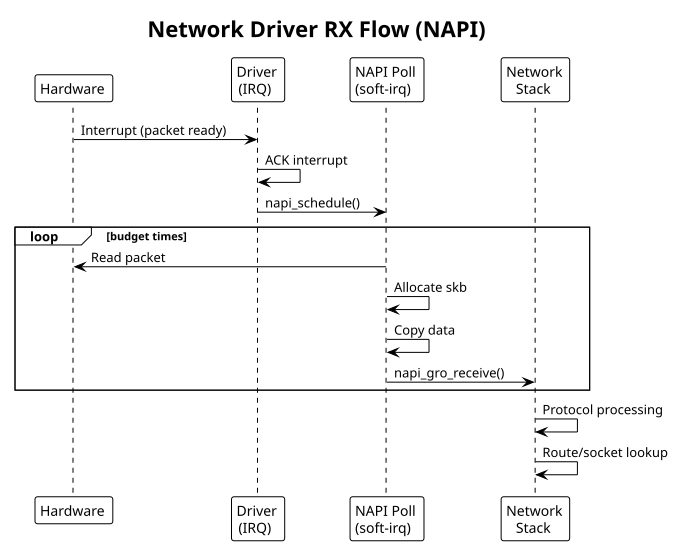

Network Drivers
Table of Contents
Network device drivers: netdev_ops, skbuff (sk_buff), packet handling. Includes virtual ethernet example.
1. Network Device Fundamentals
Network drivers provide packet I/O. Kernel abstracts as struct net_device:
- RX: receive packets from hardware, allocate skbuff, pass to net stack
- TX: net stack provides skbuff, driver sends to hardware
2. Device Registration
#include <linux/netdevice.h>
#include <linux/etherdevice.h>
struct my_netdev {
struct net_device *netdev;
void __iomem *base;
spinlock_t lock;
struct napi_struct napi;
struct sk_buff_head rx_queue;
};
static const struct net_device_ops my_netdev_ops = {
.ndo_open = my_open,
.ndo_stop = my_close,
.ndo_start_xmit = my_xmit,
.ndo_set_rx_mode = my_set_multicast_list,
.ndo_set_mac_address = eth_mac_addr,
.ndo_validate_addr = eth_validate_addr,
};
static int my_probe(struct platform_device *pdev)
{
struct my_netdev *dev;
struct net_device *netdev;
int ret;
// Allocate net_device with private data
netdev = devm_alloc_etherdev(&pdev->dev, sizeof(*dev));
if (!netdev)
return -ENOMEM;
dev = netdev_priv(netdev);
dev->netdev = netdev;
// Set MAC address (random or from DTS)
eth_hw_addr_random(netdev);
// Assign operations
netdev->netdev_ops = &my_netdev_ops;
// Get I/O memory
struct resource *res = platform_get_resource(pdev, IORESOURCE_MEM, 0);
dev->base = devm_ioremap_resource(&pdev->dev, res);
if (IS_ERR(dev->base))
return PTR_ERR(dev->base);
// Initialize NAPI
netif_napi_add(netdev, &dev->napi, my_poll, 64);
spin_lock_init(&dev->lock);
skb_queue_head_init(&dev->rx_queue);
// Register device
ret = register_netdev(netdev);
if (ret) {
devm_free_netdev(&pdev->dev, netdev);
return ret;
}
platform_set_drvdata(pdev, dev);
netdev_info(netdev, "registered\n");
return 0;
}
static int my_remove(struct platform_device *pdev)
{
struct my_netdev *dev = platform_get_drvdata(pdev);
unregister_netdev(dev->netdev);
devm_free_netdev(&pdev->dev, dev->netdev);
return 0;
}
3. Open/Close
static int my_open(struct net_device *netdev)
{
struct my_netdev *dev = netdev_priv(netdev);
// Enable interrupts, start hardware, allocate RX buffers
netif_carrier_on(netdev);
netif_start_queue(netdev);
napi_enable(&dev->napi);
return 0;
}
static int my_close(struct net_device *netdev)
{
struct my_netdev *dev = netdev_priv(netdev);
napi_disable(&dev->napi);
netif_stop_queue(netdev);
netif_carrier_off(netdev);
// Disable interrupts, stop hardware
return 0;
}
4. Transmit (TX)
Net stack calls ndo_start_xmit() with packet to send:
static netdev_tx_t my_xmit(struct sk_buff *skb, struct net_device *netdev)
{
struct my_netdev *dev = netdev_priv(netdev);
unsigned long flags;
spin_lock_irqsave(&dev->lock, flags);
// Check if TX queue is available
if (netdev_xmit_stopped(netdev)) {
spin_unlock_irqrestore(&dev->lock, flags);
return NETDEV_TX_BUSY;
}
// Write packet to hardware
// - copy skb data to TX DMA buffer
dma_addr_t dma_addr = dma_map_single(&dev->netdev->dev, skb->data,
skb->len, DMA_TO_DEVICE);
if (dma_mapping_error(&dev->netdev->dev, dma_addr)) {
spin_unlock_irqrestore(&dev->lock, flags);
dev_kfree_skb_any(skb);
return NETDEV_TX_OK;
}
// Start DMA transfer
writel(dma_addr, dev->base + TX_ADDR_REG);
writel(skb->len, dev->base + TX_LEN_REG);
writel(TX_START, dev->base + TX_CTRL_REG);
// Update stats
netdev->stats.tx_packets++;
netdev->stats.tx_bytes += skb->len;
spin_unlock_irqrestore(&dev->lock, flags);
// Device owns the skb now (will free in TX completion IRQ)
dev_kfree_skb(skb);
return NETDEV_TX_OK;
}
5. Receive (RX) - NAPI Poll
Use NAPI (New API) for receive processing — more efficient than interrupt-per-packet:
static int my_poll(struct napi_struct *napi, int budget)
{
struct my_netdev *dev = container_of(napi, struct my_netdev, napi);
struct net_device *netdev = dev->netdev;
int npackets = 0;
while (npackets < budget) {
struct sk_buff *skb;
unsigned int len;
dma_addr_t dma_addr;
// Check if packet available in hardware
if (!(readl(dev->base + RX_STATUS_REG) & RX_AVAIL))
break;
// Get packet length from hardware
len = readl(dev->base + RX_LEN_REG);
if (len < ETH_HLEN || len > ETH_DATA_LEN) {
netdev->stats.rx_errors++;
goto next_packet;
}
// Allocate skbuff
skb = napi_alloc_skb(napi, len);
if (!skb) {
netdev->stats.rx_dropped++;
goto next_packet;
}
// Copy packet data
dma_addr = dma_map_single(&netdev->dev, skb->data, len,
DMA_FROM_DEVICE);
if (dma_mapping_error(&netdev->dev, dma_addr)) {
kfree_skb(skb);
goto next_packet;
}
// Simulate DMA from hardware (in real driver, hardware fills buffer)
// memcpy(skb->data, dev->base + RX_BUF, len);
dma_unmap_single(&netdev->dev, dma_addr, len, DMA_FROM_DEVICE);
skb_put(skb, len);
// Set protocol and pass to stack
skb->protocol = eth_type_trans(skb, netdev);
napi_gro_receive(napi, skb);
netdev->stats.rx_packets++;
netdev->stats.rx_bytes += len;
next_packet:
// Signal hardware: packet processed
writel(1, dev->base + RX_NEXT_REG);
npackets++;
}
// If we got fewer packets than budget, exit polling
if (npackets < budget) {
napi_complete_done(napi, npackets);
// Re-enable RX interrupts
writel(readl(dev->base + IRQ_EN_REG) | RX_IRQ, dev->base + IRQ_EN_REG);
}
return npackets;
}
// Interrupt handler
static irqreturn_t my_isr(int irq, void *dev_id)
{
struct my_netdev *dev = dev_id;
u32 status = readl(dev->base + IRQ_STATUS_REG);
if (!(status & (RX_IRQ | TX_IRQ)))
return IRQ_NONE;
// Acknowledge interrupts
writel(status, dev->base + IRQ_STATUS_REG);
if (status & RX_IRQ) {
// Disable RX interrupts, schedule NAPI poll
writel(readl(dev->base + IRQ_EN_REG) & ~RX_IRQ, dev->base + IRQ_EN_REG);
napi_schedule(&dev->napi);
}
if (status & TX_IRQ) {
// Handle TX completion
}
return IRQ_HANDLED;
}
6. skbuff (Socket Buffer)
skbuff structure holds packet data and metadata:
struct sk_buff {
unsigned char *head; // allocated data pointer
unsigned char *data; // current data start (MAC header)
unsigned char *tail; // current data end
unsigned char *end; // allocated end
unsigned int len; // payload length
unsigned int data_len; // frags + frag_list length
__u16 protocol; // Ethernet type
struct net_device *dev; // input device
struct dst_entry *dst; // routing
// ... many more fields
};
// Common operations
skb_put(skb, len); // extend data end
skb_push(skb, len); // prepend header space
skb_pull(skb, len); // trim from head
skb_reserve(skb, len); // skip at start
skb_headroom(skb); // space before data
skb_tailroom(skb); // space after data
7. Example: Virtual Ethernet Driver
Simple virtual network device:
// veth_driver.c
#include <linux/module.h>
#include <linux/netdevice.h>
#include <linux/etherdevice.h>
struct veth_dev {
struct net_device *netdev;
struct napi_struct napi;
struct sk_buff_head rx_queue;
};
static netdev_tx_t veth_xmit(struct sk_buff *skb, struct net_device *netdev)
{
struct veth_dev *dev = netdev_priv(netdev);
// Simulate loopback: queue packet for RX
skb_queue_tail(&dev->rx_queue, skb);
napi_schedule(&dev->napi);
netdev->stats.tx_packets++;
netdev->stats.tx_bytes += skb->len;
return NETDEV_TX_OK;
}
static int veth_poll(struct napi_struct *napi, int budget)
{
struct veth_dev *dev = container_of(napi, struct veth_dev, napi);
struct net_device *netdev = dev->netdev;
int npackets = 0;
while (npackets < budget) {
struct sk_buff *skb = skb_dequeue(&dev->rx_queue);
if (!skb)
break;
skb->protocol = eth_type_trans(skb, netdev);
napi_gro_receive(napi, skb);
netdev->stats.rx_packets++;
netdev->stats.rx_bytes += skb->len;
npackets++;
}
if (npackets < budget)
napi_complete_done(napi, npackets);
return npackets;
}
static const struct net_device_ops veth_ops = {
.ndo_start_xmit = veth_xmit,
};
static int veth_probe(struct platform_device *pdev)
{
struct net_device *netdev;
struct veth_dev *dev;
netdev = alloc_etherdev(sizeof(*dev));
if (!netdev)
return -ENOMEM;
dev = netdev_priv(netdev);
dev->netdev = netdev;
eth_hw_addr_random(netdev);
netdev->netdev_ops = &veth_ops;
skb_queue_head_init(&dev->rx_queue);
netif_napi_add(netdev, &dev->napi, veth_poll, 64);
if (register_netdev(netdev) < 0) {
free_netdev(netdev);
return -ENODEV;
}
platform_set_drvdata(pdev, dev);
netdev_info(netdev, "virtual ethernet registered\n");
return 0;
}
static int veth_remove(struct platform_device *pdev)
{
struct veth_dev *dev = platform_get_drvdata(pdev);
unregister_netdev(dev->netdev);
free_netdev(dev->netdev);
return 0;
}
static struct platform_driver veth_driver = {
.driver = { .name = "veth" },
.probe = veth_probe,
.remove = veth_remove,
};
module_platform_driver(veth_driver);
MODULE_LICENSE("GPL");
MODULE_AUTHOR("Your Name");
MODULE_DESCRIPTION("Virtual ethernet driver");
8. Network RX Flow Diagram

9. See Also
- Kernel Module Fundamentals
- Performance Considerations — NAPI, RCU, lockless queues
- DMA & Memory Mapping — skbuff DMA mapping on TX/RX
- Interrupt Handling — NAPI poll scheduling from the RX IRQ